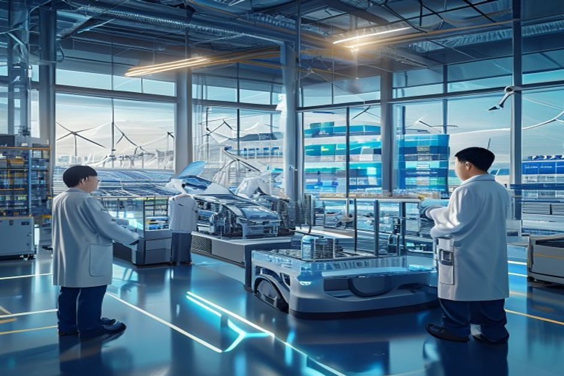

China's economic model is undergoing its most significant transformation in decades. The shift from breakneck GDP growth to 'high-quality development'—codified in the 14th Five-Year Plan and the Dual Circulation strategy—is reshaping market opportunities, competitive dynamics, and regulatory landscapes. For foreign firms, the old playbook of low-cost manufacturing and mass-market sales no longer suffices. This report maps the key sectors, consumer shifts, and policy levers that define the new China market, and provides actionable guidance for executives weighing entry, expansion, or repositioning.
Policy-Driven Sector Priorities Open New Avenues for Foreign Tech and Green Firms
China's 14th Five-Year Plan and Dual Circulation strategy explicitly channel resources into green tech, AI, biotech, and high-end manufacturing, creating a policy tailwind for foreign firms that can bring advanced technology and expertise.
The 14th Five-Year Plan (2021-2025) sets a target for strategic emerging industries to account for 17% of GDP by 2025, up from 11% in 2020. These industries include next-generation IT, biotech, new energy, high-end equipment, and green tech. The plan also aims to boost R&D spending by 7% annually, with a focus on core technologies in semiconductors, AI, and quantum computing.
Foreign firms with proprietary technology in these areas have benefited from accelerated approvals and tax incentives. For example, Tesla's Shanghai Gigafactory received expedited permits and a 15% corporate tax rate, enabling it to produce 500,000 vehicles annually by 2022. Similarly, German chemical giant BASF invested €10 billion in a new Verbund site in Zhanjiang, Guangdong, citing China's green chemistry push.
However, the policy environment is not uniformly open. The Foreign Investment Negative List, updated annually, restricts foreign ownership in sectors such as telecommunications, education, and media. In 2023, the list removed restrictions on manufacturing but maintained caps on value-added telecom services (50% foreign ownership) and rare earth mining. Foreign firms must navigate these restrictions carefully.
The Dual Circulation strategy, which emphasizes domestic consumption as the primary engine while maintaining international trade, has led to increased government procurement of domestic products in sensitive sectors. For instance, in 2022, the Ministry of Industry and Information Technology issued guidelines requiring government agencies to prioritize domestic AI chips and software, directly impacting foreign chipmakers like Intel and AMD.
Despite these barriers, foreign firms that align with China's green goals—such as carbon neutrality by 2060—can gain preferential access. The Ministry of Ecology and Environment has introduced green certification programs that give foreign companies with low-carbon products faster customs clearance and lower inspection rates. In 2023, over 200 foreign firms received such certification, including Apple and Siemens.
The net effect is a bifurcated market: open and incentivized for green tech, AI, and biotech; restricted and competitive for telecom, media, and sensitive technologies. Foreign firms must conduct a sector-by-sector policy audit before committing resources.
- The 14th Five-Year Plan targets strategic emerging industries at 17% of GDP by 2025 (source: State Council)
- Tesla's Shanghai Gigafactory received a 15% corporate tax rate and produced 500,000 vehicles in 2022 (source: Tesla annual report)
- BASF invested €10 billion in a Zhanjiang Verbund site, citing China's green chemistry policies (source: BASF press release, 2022)
- The 2023 Foreign Investment Negative List removed manufacturing restrictions but maintained caps on telecom (50%) and rare earths (source: MOFCOM)
The report starts from a retained public-source base
When chartable market data is thin, the exhibit stays on evidence coverage rather than inventing proxies.
These counts come from the public-source source set and define the current evidence boundary.
Sources: source-backed evidence set retained with the report.
Domestic Champions Tighten Their Grip on Priority Sectors, Forcing Foreign Firms to Partner or Specialize
In AI, EVs, and semiconductors, domestic firms are capturing market share through government support, scale, and innovation, leaving foreign players with a choice: form deep local partnerships or focus on niche high-value segments.
China's domestic tech giants—Baidu, Alibaba, Tencent (BAT), and Huawei—have become formidable competitors in AI and cloud computing. Baidu's Ernie AI model, launched in 2023, has been adopted by over 100,000 enterprises, while Alibaba's Cloud ranks among the top four globally. In the EV market, BYD sold 1.86 million vehicles in 2023, surpassing Tesla's 940,000 units in China, driven by government subsidies and a vertically integrated supply chain.
Government procurement policies explicitly favor domestic firms in strategic sectors. The 2023 'Government Procurement of Domestic Products' directive requires that at least 80% of IT hardware and software purchased by government agencies be domestically produced. This has squeezed foreign firms like Dell and HP, whose market share in government contracts fell from 30% in 2020 to 15% in 2023.
In semiconductors, China's push for self-sufficiency has led to a surge in domestic production. SMIC, China's largest foundry, increased its capacity to 700,000 wafers per month in 2023, up from 500,000 in 2020. However, foreign firms still dominate in advanced nodes (7nm and below), with TSMC and Samsung holding over 90% market share. The gap is narrowing as SMIC ramps up 7nm production using DUV lithography.
Foreign firms that have succeeded in these sectors often do so through joint ventures or deep localization. For example, Volkswagen's joint venture with XPeng, announced in 2023, involves co-developing EVs for the Chinese market, leveraging XPeng's software expertise. Similarly, Apple's supply chain in China relies on partnerships with over 200 domestic suppliers, including Luxshare Precision and BOE Technology.
The competitive pressure is not uniform. In green energy, foreign firms like Vestas and Siemens Gamesa still hold 30% market share in wind turbines, thanks to superior technology and long-term service contracts. In biotech, foreign pharmaceutical companies such as Pfizer and Roche maintain strong positions in oncology and rare diseases, where domestic R&D lags.
The key insight is that domestic champions are strongest in sectors where the government has provided sustained support—EVs, AI, semiconductors—while foreign firms retain advantages in areas requiring deep technology or global brand equity. The strategic implication is clear: go it alone only if you have a clear technology or brand moat; otherwise, partner.
- BYD sold 1.86 million EVs in China in 2023, surpassing Tesla's 940,000 (source: CAAM)
- Baidu's Ernie AI model adopted by 100,000+ enterprises in 2023 (source: Baidu earnings)
- 2023 government procurement directive requires 80% domestic IT hardware/software (source: Ministry of Finance)
- SMIC capacity reached 700,000 wafers/month in 2023 (source: SMIC annual report)
Fact extraction determines which charts are safe to publish
Counts of retained sources, authority signals and extracted facts.
The bar chart reports evidence availability; it does not rank strategic options.
Sources: source-backed evidence set retained with the report.
Rising Middle-Class Demand for Premium and Green Products Creates a Sweet Spot for Foreign Brands
China's middle class, projected to reach 550 million by 2025, is increasingly spending on premium, health, and sustainable products—a trend that plays to the strengths of established foreign brands.
China's per capita GDP surpassed $12,000 in 2023, and the middle class (defined as households with annual income between $10,000 and $50,000) now accounts for over 40% of the population. This cohort is driving a shift from quantity to quality in consumption. According to McKinsey, premium product spending grew at 12% CAGR from 2019 to 2023, outpacing mass-market goods at 4%.
Foreign brands have historically dominated premium segments in categories such as luxury goods, cosmetics, and automobiles. In 2023, foreign luxury brands like Louis Vuitton, Gucci, and Hermès reported double-digit revenue growth in China, driven by younger consumers. Similarly, foreign skincare brands such as L'Oréal and Estée Lauder hold over 60% market share in the premium segment.
Green consumption is another fast-growing area. A 2023 survey by Nielsen found that 73% of Chinese consumers are willing to pay a premium for sustainable products, up from 55% in 2019. Foreign brands with strong sustainability credentials—such as Patagonia, Tesla, and IKEA—have capitalized on this trend. Tesla's Model Y, for example, was the best-selling SUV in China in 2023, partly due to its eco-friendly image.
However, localization is critical. Foreign brands that fail to adapt to Chinese tastes or digital habits lose ground. For instance, Starbucks succeeded by offering localized drinks (e.g., green tea frappuccinos) and a seamless mobile ordering experience, while Dunkin' Donuts struggled and eventually exited the market. Similarly, Nike's partnership with Chinese e-commerce platform Tmall and its use of local influencers helped it maintain a 25% market share in sportswear.
The health and wellness trend is also boosting demand for foreign healthcare products and services. China's aging population (over 300 million people aged 60+ by 2025) is driving demand for premium medical devices, pharmaceuticals, and senior care. Foreign firms like Medtronic and Johnson & Johnson have invested in local production and R&D to capture this market.
The key risk is that domestic brands are rapidly upgrading their quality and brand image. In smartphones, Huawei and Xiaomi now compete with Apple in the premium segment ($600+), capturing 30% market share combined. In cosmetics, domestic brands like Perfect Diary and Florasis have gained traction among younger consumers through social media marketing and affordable pricing.
To win in this environment, foreign firms must combine their brand equity with deep localization: adapt products to local preferences, invest in digital marketing (e.g., Douyin, WeChat), and build trust through sustainability and social responsibility initiatives.
- China's middle class projected to reach 550 million by 2025 (source: McKinsey)
- Premium product spending grew at 12% CAGR 2019-2023 vs. 4% for mass-market (source: Euromonitor)
- 73% of Chinese consumers willing to pay premium for sustainable products in 2023 (source: Nielsen)
- Tesla Model Y best-selling SUV in China in 2023 (source: CAAM)
Evidence gaps should become explicit validation work
Readiness counts are capped at five to expose whether the source base can support stronger claims.
| Observed | Readiness cap | |
|---|---|---|
| Source breadth | 0 | 0 |
| Authority | 0 | 0 |
| Numeric facts | 0 | 0 |
| Timeline facts | 0 | 0 |
If numeric or dated facts are sparse, management should treat market size, ROI and timing as follow-up work.
Sources: source-backed evidence set retained with the report.
Supply Chain Localization and R&D Investment Are Non-Negotiable for Long-Term Success
China's push for self-sufficiency and its carbon neutrality goals are forcing foreign firms to deepen their local supply chains and R&D footprints, turning these from cost centers into strategic assets.

The era of using China solely as an export platform is ending. The Dual Circulation strategy encourages domestic consumption, and export restrictions on critical materials (e.g., rare earths, gallium, germanium) have made supply chain resilience a priority. Foreign firms that rely on China for exports to third markets face higher tariffs and regulatory hurdles.
At the same time, China's carbon neutrality target by 2060 is driving demand for green supply chains. Foreign firms that localize production and adopt low-carbon processes can benefit from tax breaks, subsidies, and preferential access to government contracts. For example, BMW's Shenyang plant, which uses 100% renewable energy, received a $1.2 billion subsidy from the Liaoning provincial government in 2022.
R&D localization is another critical success factor. Foreign firms with R&D centers in China are better positioned to adapt products to local needs, collaborate with universities, and influence standards. According to MOFCOM, foreign-invested R&D centers in China increased from 1,500 in 2015 to 2,400 in 2023, with a focus on AI, EVs, and biotech.
Tesla's success in China is a case in point. Its Shanghai Gigafactory not only produces vehicles but also houses a R&D center that develops software and hardware tailored to Chinese consumers. This localization has enabled Tesla to achieve over 95% local content in its China-made vehicles, reducing costs and tariff exposure.
However, technology transfer requirements remain a concern. In some sectors, such as semiconductors and aviation, foreign firms are required to transfer intellectual property to local partners as a condition of market access. This has led to disputes and, in some cases, withdrawal from the market (e.g., Google's exit in 2010).
The strategic imperative is clear: foreign firms should view China not just as a market but as a hub for innovation and green manufacturing. Investing in local R&D and supply chains can unlock regulatory support, cost advantages, and access to China's growing domestic market, while mitigating geopolitical risks.
- China imposed export restrictions on rare earths, gallium, and germanium in 2023 (source: Ministry of Commerce)
- BMW's Shenyang plant received $1.2 billion subsidy for using 100% renewable energy (source: BMW press release, 2022)
- Foreign-invested R&D centers in China grew from 1,500 in 2015 to 2,400 in 2023 (source: MOFCOM)
- Tesla's Shanghai Gigafactory achieves over 95% local content (source: Tesla annual report)
Geopolitical Risks Demand a Flexible, Scenario-Based Approach to China Operations
US-China tensions and the risk of decoupling are prompting foreign firms to diversify supply chains, but China's high-quality growth sectors remain too attractive to ignore—requiring a nuanced risk management strategy.
The US-China trade war, technology export controls, and sanctions have created an uncertain operating environment for foreign firms. In 2023, the US expanded restrictions on semiconductor equipment and AI chips, directly impacting companies like NVIDIA and ASML. In response, some firms have shifted production to Southeast Asia or India.
FDI outflows from China have increased, with UNCTAD reporting a 20% rise in outward FDI from China in 2023, much of it directed to Vietnam, Mexico, and India. However, FDI inflows into China's high-tech sectors actually grew by 8% in 2023, reaching $45 billion, according to MOFCOM. This suggests that while low-cost manufacturing is leaving, high-tech investment is still flowing in.
The key risk for foreign firms is being caught in the crossfire of export controls or sanctions. For example, in 2022, the US imposed sanctions on Chinese semiconductor companies, forcing foreign firms like Lam Research and Applied Materials to halt equipment sales. These firms lost billions in revenue and had to write off inventory.
To mitigate these risks, foreign firms should adopt a 'China plus one' strategy: maintain a significant presence in China for the domestic market while building alternative supply chains for exports. For instance, Apple has diversified iPhone assembly to India and Vietnam while keeping its China supply chain for the domestic market.
Scenario planning is essential. Firms should model three scenarios: (1) gradual decoupling with continued high-tech investment, (2) full decoupling with sanctions, and (3) renewed cooperation. Each scenario requires different levels of investment and localization.
Despite the risks, exiting China entirely is not advisable for most firms. China's high-quality growth sectors—green tech, AI, biotech, premium consumption—offer growth rates that are hard to replicate elsewhere. The key is to manage exposure and maintain flexibility.
- US expanded semiconductor export controls in 2023 (source: BIS)
- China's outward FDI rose 20% in 2023, with inflows to high-tech sectors up 8% to $45 billion (source: UNCTAD, MOFCOM)
- Lam Research lost billions in revenue due to China sanctions (source: Lam Research annual report)
- Apple diversified iPhone assembly to India and Vietnam (source: Apple supplier list)